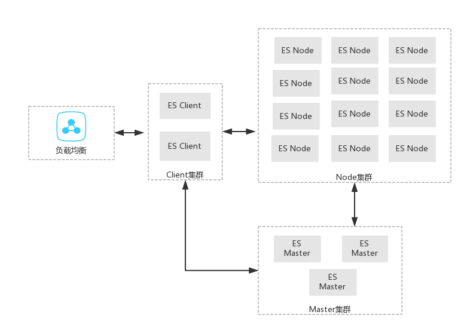

An Introduction To Elasticsearch
Table of Contents
1 ES介绍
以下内容基于ESv2.x。ESv5.x有很多重构,包括新脚本语言painless 、索引目录结构、启动vm配置等。 源码github 下载download
1.1 ES=lucene+分布式+RestApi
1.2 ES使用场景
- 适合复杂结构文档的查询、统计
- 不适合数据频繁更新，索引结构变化
- ELK 日志分析方案
2 ES架构
2.1 系统划分

2.2 基本概念
2.2.1 索引(Index)
- 示例 GET /weike10/member/count ，含义是统计索引weike10下member类型的文档数量
- weike10表示索引
- member表示索引下的类型
- count告诉ES统计文档数量
- 与mysql概念对比，ES的索引->Mysql的数据库，ES的索引类型->Mysql的表
- 索引决定了物理存储，可通过路由定制文档分布
2.2.2 节点角色(Node)
- client
- elasticsearch.yml配置"node.master: false node.data: false"
- 分发请求到合适的node
- RestClient,http协议，默认端口9200，使用NIO，支持连接池，Sniffer
- TransportClient,tcp自定义协议，默认端口9300，使用NIO，支持Sniffer
- master
- elasticsearch.yml配置"node.master: true node.data: false"
- 集群索引分布
- 索引P/R节点分布
- 文档路由规则
- node
- elasticsearch.yml配置"node.master: false node.data: true"
- 执行存储、查询文档
- 每个node都具备协同其他节点处理同一个请求的能力
- 每个node包含不同索引的不同Shard，可配置一个node可以存储一个索引的shard个数
2.2.3 分片(Shard)
- 分片就是一个索引的存储单元
- 分片由P/R组成
- 主分片(Primary)
- 增删改查
- 增删改操作在P完成后，依据策略(consistency,多少副本同步成功)并行同步到R，最后返回
- 不可动态配置
- P的数量决定了索引的数据分布能力，提升增删改查的能力
- 副本(Replica)
- 查询
- 可动态配置
- R可以提升查询能力
- 主分片(Primary)
- 索引在创建时指定P/R的个数
- 分片均衡分布在ES集群的Node里
3 ES使用
3.1 集群配置 elasticsearch.yml
network.host: 100.100.100.100 cluster.name: weike # node configuration node.master: false node.data: true # 1台机器启动几个节点 node.max_local_storage_nodes: 1 # indices configuration index.number_of_shards: 8 index.number_of_replicas: 1 # 1个node放置一个索引的几个shard index.routing.allocation.total_shards_per_node: 1 # instance paths path.conf: /home/admin/es/config path.plugins: /home/admin/es/plugins path.work: /data/es/work path.data: /data/es/data path.logs: /data/es/log # swapping bootstrap.mlockall: true #gateway #gateway.type: local gateway.recover_after_nodes: 8 gateway.recover_after_master_nodes: 2 gateway.recover_after_time: 5m gateway.expected_nodes: 8 # recovery #cluster.routing.allocation.node_initial_primaries_recoveries: 4 #cluster.routing.allocation.node_concurrent_recoveries: 1 #indices.recovery.concurrent_streams: 5 # discovery discovery.zen.minimum_master_nodes: 2 discovery.zen.ping.multicast.enabled: false # 慢日志 index.search.slowlog.level: INFO index.indexing.slowlog.level: INFO # search and fetch logging index.search.slowlog.threshold.query.warn: 10s index.search.slowlog.threshold.query.info: 5s index.search.slowlog.threshold.query.debug: 2s #index.search.slowlog.threshold.query.trace: 500ms index.search.slowlog.threshold.fetch.warn: 5s index.search.slowlog.threshold.fetch.info: 2s index.search.slowlog.threshold.fetch.debug: 1s index.search.slowlog.threshold.fetch.trace: 200ms index.indexing.slowlog.threshold.index.warn: 10s index.indexing.slowlog.threshold.index.info: 5s index.indexing.slowlog.threshold.index.debug: 2s index.indexing.slowlog.threshold.index.trace: 500ms # 查询条件的个数限制，默认1000 indices.query.bool.max_clause_count: 10000 index.cache.field.type: soft index.cache.field.expire: 10m index.fielddata.cache: soft indices.fielddata.cache.expire: 10m # index.translog.flush_threshold_size: 1024mb # 默认刷新周期 index.refresh_interval: 5s indices.store.throttle.max_bytes_per_sec: 100mb #indices.fielddata.cache.size: 50% #indices.cache.filter.size: 50% #index.cache.field.max_size: 50000 #ssd #index.merge.scheduler.max_thread_count: 1 # JVM gargabe collection work logging monitor.jvm.gc.ParNew.info: 2s monitor.jvm.gc.ParNew.debug: 1s monitor.jvm.gc.ConcurrentMarkSweep.info: 5s monitor.jvm.gc.ConcurrentMarkSweep.debug: 2s discovery.zen.ping.unicast.hosts: ["es.master.1","es.master.2","es.master.3"] #script.inline: sandbox #script.indexed: sandbox script.indexed: true script.inline: true script.stored: false script.file: true #script.update: false #script.plugin: false script.cache.expire: 60m #script.cache.max_size: #max_size_in_bytes #action.auto_create_index: false action.disable_delete_all_indices: true #index.mapper.dynamic: false script.painless.regex.enabled: true script.engine.groovy.inline: true script.engine.groovy.stored.search: true script.engine.groovy.stored.aggs: true script.engine.mustache.stored.search: true
3.2 启动脚本
#! /bin/sh
PID_PATH=/data/es/es.pid
usage()
{
echo "Usage: ${0##*/} {start|stop} "
exit 1
}
start()
{
if [ -f "${PID_PATH}" ]; then
echo "Application has started!"
exit 0
fi
export ES_HEAP_SIZE=4G
#export ES_HEAP_NEWSIZE=3g
#export ES_JAVA_OPTS="-XX:PermSize=128M -XX:MaxPermSize=512M"
bin/elasticsearch -Des.insecure.allow.root=true -d -p ${PID_PATH}
echo "Application start finished!"
}
stop()
{
if [ -f "${PID_PATH}" ]; then
PID=`cat ${PID_PATH}`
kill ${PID}
rm -rf ${PID_PATH}
echo "Application shutdown finished!"
else
echo "Not found pid file!"
fi
}
if [ "$1" = "start" ]; then
start
elif [ "$1" = "stop" ]; then
stop
else
usage
fi
3.2.1 集群启动
- 启动次序 master -> node -> client
3.3 创建索引
#! /bin/sh
curl -XPUT 'http://ip:9200/weike10' -d '{"settings":{"index":{"number_of_shards":8,"number_of_replicas":1}},"mappings":{"member":{"properties":{"buyerNick":{"type":"string","index":"not_analyzed"}}}}}'
curl -XPUT 'http://ip:9200/weike20' -d '{"settings":{"index":{"number_of_shards":4,"number_of_replicas":1}},"mappings":{"member":{"properties":{"buyerNick":{"type":"string","index":"not_analyzed"}}}}}'
curl -XPUT 'http://ip:9200/weike21' -d '{"settings":{"index":{"number_of_shards":4,"number_of_replicas":1}},"mappings":{"member":{"properties":{"buyerNick":{"type":"string","index":"not_analyzed"}}}}}'
curl -XPUT 'http://ip:9200/weike30' -d '{"settings":{"index":{"number_of_shards":8,"number_of_replicas":1}},"mappings":{"member":{"properties":{"buyerNick":{"type":"string","index":"not_analyzed"}}}}}'
3.3.1 索引化名
- 在业务层暴露花名，而不是索引名
- Alias的作用主要是封装使用索引的内部细节，方便在不影响上层业务同时修改ES数据操作。
- Alias可以指定search_ routing和index_ routing，为对应操作指定默认路由
3.3.2 文档路由
- 路由算法shard = hash(routing) % number_ of_ primary_ shards
- 路由配置
- 默认文档id路由
- alias机制，可配置读/写路由indexrouting和searchrouting
- API (get, index, delete, bulk, update, and mget) 配置routing参数
3.4 本地演示 chrome Sense
PUT /demo
{"settings":{"index":{"number_of_shards":1,"number_of_replicas":0}},"mappings":{"member":{"properties":{"name":{"type":"string","index":"not_analyzed"}}}}}
POST /demo/usr/1
{"name":"Yunpian","nick":"Yunpian","age":1214}
GET /demo/usr/1
POST /demo/usr/
{"name":"Yunpian","nick":"Yunpian","age":1214}
POST /demo/usr/1/_update
{"script":{"inline":"ctx._source.age += count","params":{"count":4}}}
GET /demo/usr/_search
{"query":{"term":{"name":"Yunpian"}}}
GET /demo/usr/_search
{"query":{"term":{"nick":"yunpian"}}}
GET /demo/usr/_count
DELETE /demo
3.5 ES插件
- 插件使用
- bin/plugin -h
- bin/plugin install 插件名， 如bin/plugin install lmenezes/elasticsearch-kopf
- kopf
4 ES使用总结
4.1 一些建议
- 根据业务数据特性，设置索引的P/R的分配大小, 兼顾查询／更新性能。比如一个shard的单个查询总量控制在100w内(约数，由机器性能和查询性能要求定)
- 索引名在内部使用，业务层提供的化名。化名就像指针可以实时定义具体访问内容，比如一个索引对应读／写化名就能在不改业务代码情况下完成数据迁移到另一个索引
- 使用route，可以保证同样特性的数据在同一个P上，这样的查询效率会很高。注意，缺点是可能出现更新热点，导致单机压力过大
- 创建索引时考虑好内容的Mapping类型和索引方式，方便以后的查询条件，比如大小写问题
- 导入数据时，可以先将索引的R设置为0，导入后再恢复
- 在频繁更新时，设置refreshinterval为更大的间隔时间，ES的默认值为1s。降低了实时性，保证IO性能等
4.2 问题与解答
- 查询大小写问题
- 现象是插入的内容是大写，而查询条件用大写却稍不到
- 原因是没有指定内容的索引方式，ES默认的分析器会把内容统一转成小写（因为ES是一个搜索引擎）
- 解决方法有几种
- 在内容首次index时指定索引方式为"not_ analyzed"
- 将查询条件转成小写
- 自定义分析器
- 高效的批量操作
- bulk ES将按bulk里的次序由上到下执行
- 高效的查询操作
- scroll 比分页更加高效
- groovy脚本oom
- oom原因在于groovy脚本编译后占用的内存不会释放,而update操作中的script脚本应变量导致ES一直编译脚本
- 解决方法
- ESv2.4使用groovy脚本更新文档内容时,inline内容尽量不变，通过params传参数
- ESv5.x开始默认painless
5 学习链接
- 官方文档 v2.x
- Mastering Elasticsearch